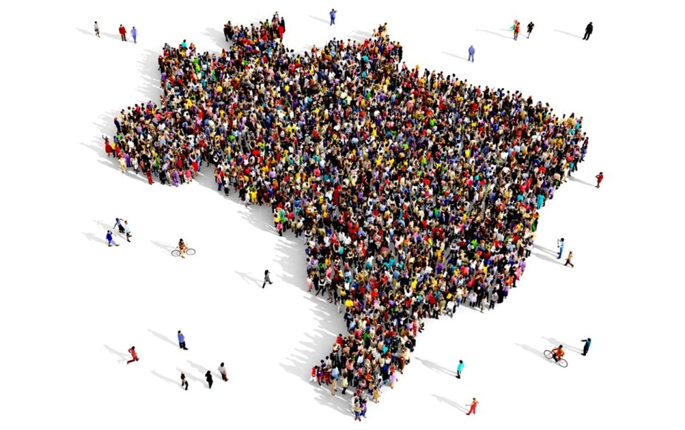

Brasil

Curiosidades
O Brasil é o maior país da América do Sul, com área de mais de 8,5 milhões de km². Tem como capital a cidade de Brasília. Apresenta uma grande variedade climática e paisagística, que pode ser analisada mediante os domínios morfoclimáticos.
A população brasileira chegou a 213.317.639 habitantes em 2021, de acordo com o IBGE, com mais de 87% dela vivendo nas cidades. São Paulo, capital do estado de mesmo nome, constitui a maior área urbana do Brasil, com 12 milhões de habitantes.
A economia brasileira, embora liderada pelo setor terciário, se destaca também em áreas como a indústria petroquímica e automobilística e na produção agropecuária, que tem a soja como

Tamanho e diversidade: O Brasil é o quinto maior país do mundo em área territorial, com cerca de 8,5 milhões de quilômetros quadrados. É conhecido por sua enorme diversidade geográfica, com a Floresta Amazônica, o Pantanal, as praias paradisíacas do litoral e as impressionantes Cataratas do Iguaçu.
Biodiversidade: A Amazônia brasileira abriga a maior floresta tropical do mundo e é considerada uma das áreas mais ricas em biodiversidade do planeta. O Brasil é lar de inúmeras espécies de plantas, animais e insetos únicos.

População: O Brasil tem uma população estimada em mais de 210 milhões de pessoas, o que o torna o sexto país mais populoso do mundo. Sua população é extremamente diversificada, resultado de uma rica mistura de etnias, incluindo indígenas, europeus, africanos e asiáticos.